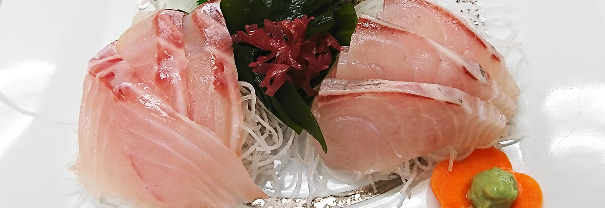

      <div

        data-pencil-name="豊かな恵み"

        class="cuisine-banner box-border w-full h-[420px] shrink-0 overflow-hidden relative flex items-center"

      >

        <div class="cuisine-banner__bg absolute inset-0" aria-hidden="true">

          

        </div>

        <div

          data-pencil-name="Banner Overlay"

          class="cuisine-banner__overlay box-border absolute inset-0 [background-image:linear-gradient(180deg,_#1A242266_0%,_#1A242244_50%,_#1A242288_100%)] bg-no-repeat bg-[length:100%_100%] [z-index:1]"

        ></div>

        <div

          data-pencil-name="Banner Title"

          class="text-[28px]/[40px] md:text-[36px]/[52px] box-border w-[calc(100%-2rem)] max-w-[720px] relative ml-4 md:ml-[80px] mr-4 text-[#FFFFFF] font-['Shippori_Mincho',system-ui,sans-serif] font-medium text-left [z-index:2]"

        >

          伊豆下田の

          <br />

          豊かな恵みに舌鼓

        </div>

      </div>

